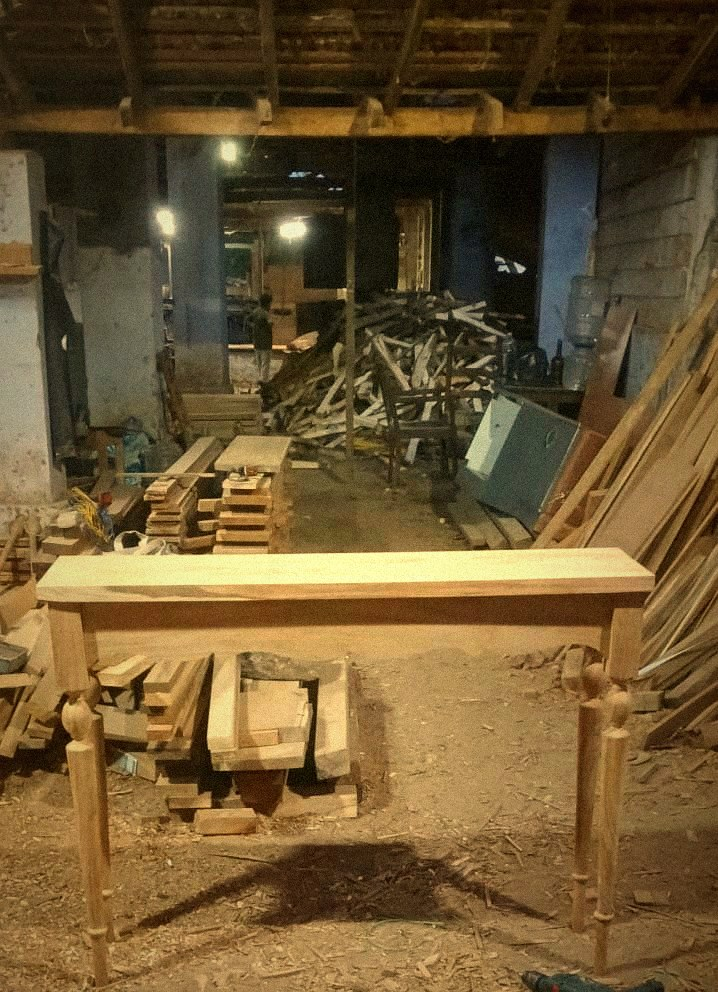

The Annam Woodworks story
From a pile of teak to a piece you keep for life.
Annam Woodworks is a small, design-led studio making teak and wicker furniture to order. There is no catalogue of mass-made stock — each piece is drawn, turned, joined and finished by hand for the room it will live in.
[A line or two in your own words: how Annam Woodworks began, who is behind it, and where the workshop is.]
Made once, for one home.